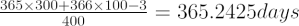

The problem with most calendar systems is that they are based on 24-hour days, but the orbital period of the Earth is not an exact multiple of 24. Over time, calenders get out of step with the actual orbital period. This is most readily seen in a changing date for the start of seasons (or the occurrence of the solstices and equinoxes). The Gregorian calendar was devised by Aloysius Lilius, and implemented in a papal bull on 24 February 1582 by Pope Gregory XIII (1502-1585), intending to replace the Julian calendar which grows out of step by about 8 days every 1000 years.
A standard year in the Julian calendar was 365 days, with a leap year (366 days) every four years. The main innovation of the Gregorian calendar was to examine the century years: 1600, 1700, 1800, etc. Although these years are all divisible by 4, suggesting they should be leap years, the Gregorian system proposed that only century years exactly divisible by 400 would be leap years. For example, 1600, 2000 and 2400 are leap years, but 1900 and 2100 are not.
The average length of a year in the Gregorian calendar is:

which is accurate to about one day in 3000 years.
In order to get the Gregorian Calendar in step, it was necessary to jump from 4th October 1582 to 15th October 1582 (a year of 355 days!), due to the error that the Julian Calendar had accumulated. Not all countries adopted the Gregorian calendar straight away: Britain and her American colonies did not use the new calendar until 1752 (losing 11 days between 2nd September and 14th September), Russia waited until after the revolution early in the 20th century, and Greece delayed until 1923.